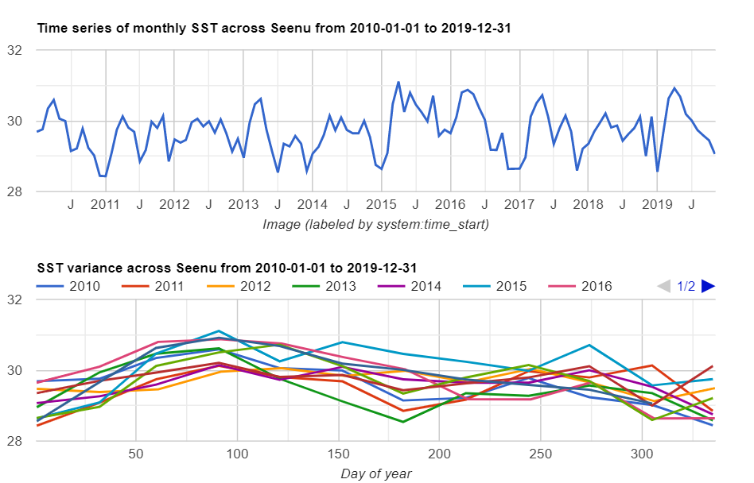

Island Health Explorer
Ocean Explorer
Currently the following oceanic variables are offered to be explored :
- Atoll SST Temperature Explorer
Sea Surface Temperature time series for each administrative atoll (2002 - Present) - Atoll Cholorophyll Explorer
Sea Surface Temperature time series for each administrative atoll (2002 - Present)
Example application - Spatial variation of SST and Coral Bleaching
Introduction
Entirely comprised of coral atolls, coral bleaching effects the Maldives as negetively as a whole. Frequent bleaching events in recent years have alarmed scientists and with global warming it is predicted that coral bleaching events will become more frequent. This poses a significant threat to the Maldives archipelago. To study potential future patterns past events and impact past events and impact needs to be studied in detail.
Seasonal Changes in SST
Even though the Maldives lay in the tropics with little variation in air temperatures, sea suface temperatures show a regular seasonal fluctuation. Figure below which plots the SST from over a decade shows that the end of the "dry" North East monsoon period results in a very high temperature. Coral bleaching events are clearly identifiable to occur in the latter years with 2015-2016 the most severe, and all events occur during the period corresponding to early April.
